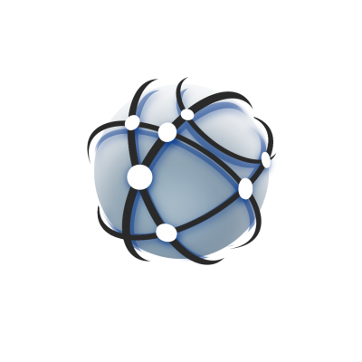

XrdSecssh for XRootD
Dr. Andreas-Joachim Peters - CERN IT-SD-PSS
XRootD Workshop Lyon 2026
github.com/cern-eos/xrootd - branch XrdSecssh
SSH-key login, over TLS only
sec.protocol ssh authenticates a client with
an SSH public key or an OpenSSH user certificate. The server never sees
a password. TLS authenticates the server and carries the handshake;
the plugin maps a proven key to a local username.
XrdSecssh
Who is this? Challenge/response over a key or user cert. Sets
XrdSecEntity.name. No path decision.
Keys or CA
A keys-file maps raw keys to users. A
ca-keys-file validates OpenSSH user certificates.
Either source is enough.
Host in the signature
The client signs the hostname it connected to. A rogue redirect target cannot replay that signature onto another server.
Contents
- 1 Why SSH keys - and why not libssh
- 2 Handshake: init, challenge, signed host
- 3 Raw keys vs OpenSSH user certificates
- 4 Principal mapping, policy, revocation
- 5 Client keys, ssh-agent, configuration
- 6 Hardening, tests and status
A key you already have, not another token
Unix and host protocols trust the connection. GSI and
OIDC bring a PKI or an issuer. SSH keys are already on laptops and in
authorized_keys. This plugin reuses that material on
root:// over TLS.
| unix / host | This plugin | |
|---|---|---|
| Who am I? | Peer address or local uid | Proven SSH key or user certificate |
| Secret on the wire | None / implicit | Signature of a server nonce + host + fingerprint |
| Server proof | None in the sec handshake | TLS server certificate (mandatory) |
| Federation risk | N/A | Host binding stops a redirect-target relay |
| HTTPS | Separate | Native root:// only; TLS is still required |
This is client authentication only. Do not disable TLS
peer verification. Authorization is the usual ofs.authlib
/ acc stack after login.
We use SSH key formats, not the SSH protocol
libssh and libssh2 implement
RFC 4253: KEX, channels, SFTP, a second TCP stack. This plugin never
opens an SSH session. It proves possession of a key over the TLS
connection XRootD already has, using OpenSSL (already linked).
| libssh / libssh2 | What we actually need | |
|---|---|---|
| Transport | SSH binary packet + KEX + MAC | XRootD credentials on TLS |
| Crypto | Their own OpenSSL/gcrypt wrapper | OpenSSL EVP - already in the tree |
| Keys | Full client identity + known_hosts | Parse ssh-ed25519 / ssh-rsa blobs and OpenSSH certs |
| Agent | Whole agent client | Two RPCs: list identities, sign (plus euid / mode checks) |
| Policy | OpenSSH server semantics | Host binding, deny-users, fail-closed critical options |
A second SSH library would add a packaging dependency,
unused attack surface, and a handshake we would still have to replace.
The wire format is xrdsec-ssh-v2, not SSH.
Two round-trips, one per-connection challenge
Protocol version 1. The signed payload is
xrdsec-ssh-v2 || string(host) || string(nonce) || string(fp).
Challenge state lives on the protocol object, not in a global table.
Raw keys and user certificates
Init requires at least one usable trust source.
Certificate-only sites may leave keys-file empty when
-ca-keys-file loads.
keys-file
alice ssh-ed25519 AAAA…- or authorized_keys style
ssh-ed25519 AAAA… alice@host - Fingerprint must match a loaded key
- Requested user must match the mapped account
- Read once at plugin init
ca-keys-file
ssh-ed25519-cert-v01@openssh.comssh-rsa-cert-v01@openssh.com- CA signature, type=1, validity window
- Any critical option is a fail-closed reject
- Client must present the cert via ssh-agent
V1 algorithms: ssh-ed25519, ssh-rsa
(≥ 2048 bit). ECDSA and FIDO sk-* are not supported.
RSA signatures must be rsa-sha2-256.
A signature is only good for the host you reached
Without a host in the signed payload, a malicious data server (or a redirect you followed) can relay the client’s signature onto every other server that trusts the same keys.
Signs the URL host
XrdSecProtocolsshObjectgets the connected hostname- Normalised: lower-case, no trailing dot, no
[ipv6] - Response carries that host next to the signature
- Fingerprint in the challenge must match the presented key
Accepts only its own names
- FQDN, kernel hostname (long + short)
localhost,127.0.0.1,::1- Plus
-hostnames a,b,…for aliases and VIPs - Unknown host → “bound to a different server”
This is not TLS channel binding. It closes the relay
path while staying independent of the TLS stack. List load-balancer
names with -hostnames.
What must be true of a user cert
The CA is fully trusted. Restrict
ca-keys-file. Empty principals are not a wildcard unless
you opt in.
| Check | Rule |
|---|---|
| TLS | Plugin constructors refuse non-TLS connections |
| Type | User certificate only (type=1) |
| Validity | valid_after / valid_before |
| Critical options | Any option (force-command, source-address, …) is rejected |
| Principals | Must contain the requested user if the list is non-empty |
| Empty principals | Rejected unless -allow-empty-principals |
| RSA | ≥ 2048 bit subject key; CA sig label rsa-sha2-256 |
| Revocation | Subject key, cert fingerprint, serial, key id |
From principal to local account
When mapping is enabled, the requested user is preferred
if it is a listed, mappable principal. [root, alice] +
request alice works.
Direct and file
-principal-as-user- principal is a local name or uid-principal-map-/etc/xrootd/ssh_principals.map-principal-map-file <path>- Direct mapping is tried first, then the file
- Map file is hot-reloaded (stat inode / mtime)
After every path
- Username charset + length cap (64)
-deny-usersdefaultroot-deny-users noneclears the list- NSS lookups run outside the map mutex
- No global lock on the auth path
A text list, hot-reloaded
Binary OpenSSH KRLs are not parsed. Use
ssh-keygen -L for serial and key id, then list them.
revoked-keys-file
ssh-ed25519 AAAA…- raw or subject keySHA256:base64fingerprintserial: 42id: alice-2026-01- Same file-safety checks as the keys file
Checked on init
- Raw key fingerprint
- Certificate fingerprint
- Certificate subject-key fingerprint
- Serial and OpenSSH key id
- Client sees “key or certificate is revoked”
PEM, OpenSSH files, or ssh-agent
The first usable source wins. Certificate identities require the agent. Encrypted keys are refused - the client never prompts.
| # | Source | Notes |
|---|---|---|
| 1 | XRD_SSH_KEY_FILE | OpenSSH native or PEM/PKCS8; alias XRD_SSH_PRIVATE_KEY_FILE |
| 2 | SSH_AUTH_SOCK | Used if no key file, or when XRD_SSH_AGENT=1 |
| 3 | ~/.ssh/id_ed25519 then id_rsa | Only if neither env is set and XRD_SSH_USER is unset |
| - | XRD_SSH_USER | Else USER |
| - | XRD_SSH_AGENT_FINGERPRINT | Pick one agent identity |
Key files and agent sockets must be euid-owned and not
group/other accessible. Keys are read from the checked fd
(O_NOFOLLOW). Agent I/O times out after 10 s.
sec.protocol ssh …
xrootd.cf
xrootd.seclib libXrdSec.soxrootd.tls allsec.protocol ssh -keys-file /etc/xrootd/ssh_authorized_keys-ca-keys-file /etc/xrootd/ssh_ca_keys-revoked-keys-file /etc/xrootd/ssh_revoked_keys-principal-as-user -principal-map-hostnames data1.example.org,vip-deny-users root,daemon
Defaults and ranges
- keys-file
/etc/xrootd/ssh_authorized_keys -maxsz8192 (1 … 524288)-nonce-ttl30 s (1 … 600)- keys / CA files: init only
- principal-map and revoked: hot-reload
- Files: regular, euid owner, not group/other writable,
O_NOFOLLOW, ≤ 10 MB
What we refuse to do on the hot path
| Risk | Mitigation |
|---|---|
| Signature relay via redirect | Host in the signed payload; accepted-name set + -hostnames |
| Global challenge table DoS | Per-object PendingChallenge; dies with the connection |
| Empty-principal wildcard / root | Reject empty principals by default; -deny-users root |
| Mapping leak to the client | Generic “SSH authentication failed.”; detail in the server log |
| Small RSA / SHA-1 labels | ≥ 2048 bit; rsa-sha2-256 only |
| Key-file TOCTOU / symlink | O_NOFOLLOW, fstat, read the checked fd |
| Wedged ssh-agent | 10 s send/receive timeout |
| Parser DoS | 64 KiB wire fields; line / base64 / cred size caps |
Debug (-debug / XrdSecDEBUG=1)
redacts fingerprints and omits usernames and socket paths.
Unit coverage in xrdsecssh-unit-tests
The test TU includes the protocol object. CMake links
the vendored GTest::gtest targets (same as master).
Wire / crypto
- ed25519 / RSA sign-verify
- Host binding and aliases
- Trailing bytes, maxsz
- Per-object challenge lifetime
- OpenSSH-format and encrypted keys
Policy
- Empty principals default / opt-in
- deny-users on raw and cert
- Requested-principal preference
- Generic client errors
- Small RSA rejected everywhere
Ops
- Safe file reader / symlink
- Cert type, expiry, critical opts
- Revocation parse + hot-reload
- Init option ranges
- Cert-only init without keys-file
68 tests. Run ctest -R xrdsecssh-unit-tests.
Status
sec.protocol ssh+ TLS gate- Raw keys and OpenSSH user certs
- Host-bound challenge (v1 wire)
- Principal map, deny-users, revoke
- OpenSSH private-key files + agent
- 68 unit tests, packaging
- TLS channel binding / exporter
- ECDSA / FIDO
sk-* - Binary OpenSSH KRL files
- HTTPS / XrdHttp handshake
- Encrypted private keys (use agent)
- Propose the plugin for xrootd/master
- Always set
-hostnamesfor aliases - Keep CAs tight; prefer mapping + deny-users
- Docs:
src/XrdSecssh/README.md
XrdSecssh authenticates the
client with an SSH key or user certificate on TLS root://.
The server is authenticated by TLS. The signed host name stops a
federation relay. Acc authorizes paths afterwards.